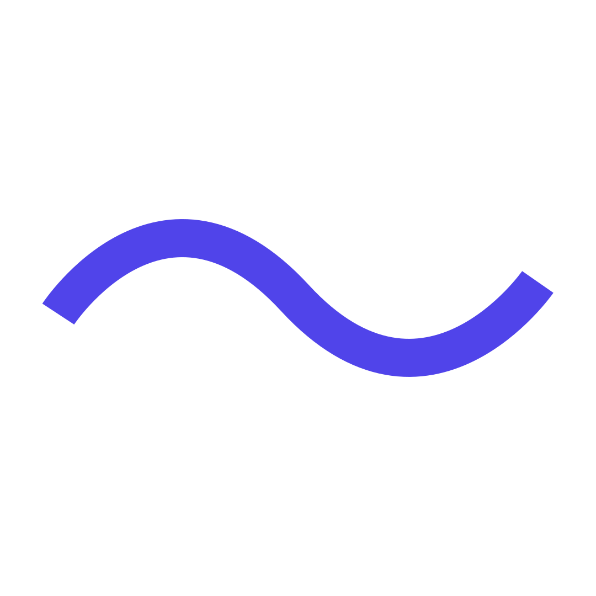

<div class="fullscreen">
  <div class="prefix">
    <span class="iso-right" style="display: block">
      de 
    </span>
  </div>
  
  <div class="sine">
    <!--  -->
    <canvas id="canvas" class="iso-left" width=252 height=252></canvas>
  </div>
  
  <div class="suffix">
    <span class="iso-right" style="display: block">
      apps
    </span>
  </div>
</div>


<script>
  var canvas = document.getElementById('canvas');
  if (canvas.getContext){
	var ctx = canvas.getContext('2d');
	ctx.lineWidth=16;
	ctx.strokeStyle="#5044ea";
  }

  function drawSine(canvas,count) {
	if (canvas.getContext){
	  var ctx = canvas.getContext('2d');
      ctx.clearRect(0, 0, canvas.width, canvas.height);

	  ctx.moveTo(24,50);
	  ctx.beginPath();
	  for(var i=0; i<209; i++)
		ctx.lineTo(i+24,-Math.sin((i+count)/33)*24 + 126); 
	  ctx.stroke();

      setTimeout(function () {
        drawSine(canvas,count+4);
      },20);

    }
  }
  drawSine(canvas,0);
</script>
